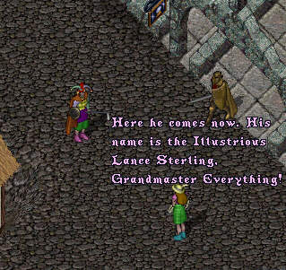
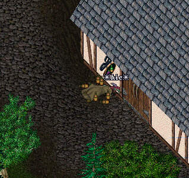

Episode 58: ImaNewbie and the Lost Tribe of Amazon Women (Part 4) - The Conclusion. Having once again seen his true love, IrmaDufus, ImaNewbie decides to leave the Amazons and head back to the Old Lands to win her back.
Returning to the Old Lands, ImaNewbie searches
in vain for Irma. Then one day, he finally runs
into her outside the Mage's Shop in Britain.

Spurned by his true love, ImaNewbie comes apart at the
seams. Gone is the colorful outfit, replaced by a dowdy
deathrobe. Gone is the cheerful "Hail and Well Met!". All
that is left is the hollow drunken shell of our hero, his
grief drowned in ale, passed out in front of a tavern.

Can this be the end of ImaNewbie as we know him? Will Irma forget Ima and marry the Illustrious Lance Sterling, Grandmaster Everything? Will ImaNewbie fade into oblivion, his noble quest submerged in an alcholic sea of self-pity? Will they ever fix the lag in UO? Stay 'tooned in the New Year as we embark on the next great saga, entitled "The Fall and Rise of ImaNewbie".